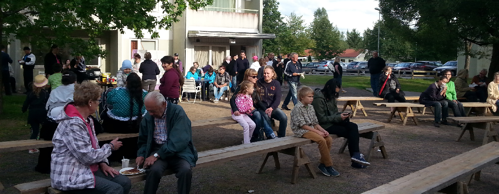

Korttelikoti Oravanpesä
Korttelikoti Oravanpesä
Viialankatu 5 C 73, 45150 Kouvola
Aukioloajat: ma-pe 9.30-14.30
Tupavastaava puh. 040 549 3116
oravanpesa@kouvolankorttelikodit.fi
Oravanpesä sijaitsee Viialankatu 5:n päätyhuoneistossa, katutasossa. Kulku on tehty helpoksi liikuntarajoitteisille ja käytettävissä on kotoisat, mukavat tilat.
Viikko-ohjelma muodostuu asiakkaiden toiveiden mukaan. Viihdykettä ja tekemistä löytyy kaikille halukkaille. Oravanpesässä järjestetään erilaisia teematapahtumia.
Asiakkaiden käytössä on tietokoneita. Henkilökunta on valmis auttamaan aloittelevaakin netin käyttäjää tietokoneen maailmaan. Korttelikodilla on myös mahdollisuus verenpaineen mittaukseen. Tilat ovat myös vuokrattavissa esimerkiksi syntymäpäiviä varten.
Tervetuloa, olemme täällä Teitä kaikkia varten!
Oravanpesän viikko-ohjelma
Avoinna ma-pe klo 9.30–14.30
Oravanpesässä on joka päivä tarjolla edullisesti kahvia ja leivonnaisia!
Oravanpesässä tapahtuu:
15.11. klo 12.00 Diakoni Ulla Tornianen tavattavissa
21.11.-19.12. Jouluaskartelukerho keskiviikkoisin
5.12. asti Villasukkien joulukeräys paikalliselle vanhainkodille
13.12. klo 12.00 Diakoni Ulla Torniainen tavattavissa
Maanantai
11.00
Pelirinki. Tule pelaaman korttia porukassa.
12.00
Ruokapankki
13.00
Kouluruoan jako
Tiistai
10.00
Keppijumppa
10.30
Elokuvakerho
13.00
Kouluruoan jako
Keskiviikko
10.00
Pelejä ja tietokilpailuja
10.30
Pulisevat puikot. Kutomista ja keskustelua.
13.00
Kouluruoan jako
Torstai
10.00
Ulkoilua
10.30
Elokuvakerho
13.00
Kouluruoan jako
Perjantai
10.30
Peliperjantai
12.00
Ruokapankki
13.45
Kouluruoan jako